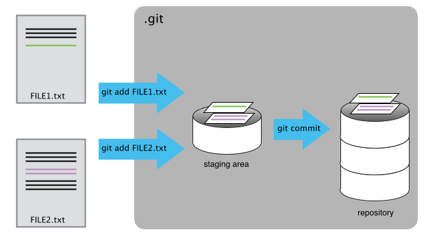

Tracking Changes#
Lets work in the inflammation directory
Tip
You can:
use
pdwto ensure that you are in the correct directoryuse
git statusto ensure that git is working
First tracked change#
Let’s create a file called project.txt that contains some notes
about what we plan to do in this project.
We’ll use nano to edit the file but you can use whatever editor you like.
In particular, this does not have to be the core.editor you set globally
earlier.
nano project.txt
Type the text below into the project.txt file:
Some initial data analysis to identify how inflammation changes over time after surgery.
In nano: to exit ctrl+x; to save Y
Check if the file was created using
lsCheck the file content using
cat project.txt
Now, if we check the status of our project again, Git tells us that it’s noticed the new file:
Check the status: $ git status
On branch main
No commits yet
Untracked files:
(use "git add <file>..." to include in what will be committed)
project.txt
nothing added to commit but untracked files present (use "git add" to track)
The untracked files message means that there’s a file in the directory that Git isn’t keeping track of. We can tell Git to track a file using git add:
git add project.txt
and then check that the right thing happened:
Check the status: $ git status
On branch main
No commits yet
Changes to be committed:
(use "git rm --cached <file>..." to unstage)
new file: project.txt
Git now knows that it’s supposed to keep track of project.txt,
but it hasn’t recorded these changes as a commit yet.
To get it to do that,
we need to run one more command:
git commit -m "Start notes on the patient inflammation project"
Output
[main (root-commit) cf53ab4] Start notes on the patient inflammation project
1 file changed, 2 insertions(+)
create mode 100644 project.txt
When we run git commit,
Git takes everything we have told it to save by using
git addand stores a copy permanently inside the special.gitdirectory.This permanent copy is called a
commitorrevisionGive to the
commita short identifier (herecf53ab4- your commit may have another identifier.)Use the
-mflag (for “message”) to record a short, descriptive, and specific comment that will help us remember later on what we did and why.If we just run
git commitwithout the-moption, Git will launch thecore.editorso that we can write a longer message.
Check the status again:
Check the status: $ git status
On branch main
nothing to commit, working tree clean
Congratulations, your first change was correctly tracked by Git!
Second change#
Now suppose Jane adds more information to the file. Update your text to look like:
Some initial data analysis to identify how inflammation changes over time after surgery.
Jane is a Data Scientist and Samit is a statistician. We'll need to determine
who is responsible for what in this project.
You can fallow the same steps above: using git status, git add, git commit.
But let’s go further and ensure that our commit reflects the change made.
For this we will use git diff:
Check the diff output: $ git diff
diff --git a/project.txt b/project.txt
index 36b3292..c5f0d2c 100644
--- a/project.txt
+++ b/project.txt
@@ -1,2 +1,4 @@
Some initial data analysis to identify how inflammation changes over time after surgery.
+Jane is a Data Scientist and Samit is a statistician. We'll need to determine
+who is responsible for what in this project.
The output is cryptic because it is actually a series of commands for tools
like editors and patch telling them how to reconstruct one file given the
other. If we break it down into pieces:
The first line tells us that Git is producing output similar to the Unix
diffcommand comparing the old and new versions of the file.The second line tells exactly which versions of the file Git is comparing;
36b3292andc5f0d2care unique computer-generated labels for those versions.The third and fourth lines once again show the name of the file being changed.
The remaining lines are the most interesting, they show us the actual differences and the lines on which they occur. In particular, the
+marker in the first column shows where we added new lines.
After reviewing our change, it’s time to commit it:
git commit -m "Add note about project responsibilities"
Check the status: $ git status
Date:On branch main
Changes not staged for commit:
(use "git add <file>..." to update what will be committed)
(use "git restore <file>..." to discard changes in working directory)
modified: project.txt
no changes added to commit (use "git add" and/or "git commit -a")
Whoops:
Git won’t commit because we didn’t use git add first.
Let’s fix that:
git add project.txt
git commit -m "Add note about project responsibilities"
Git insists that we add files to the set we want to commit before actually committing anything. This allows us to commit our changes in stages and capture changes in logical portions rather than only large batches.
Staging Area#
For example, suppose we’re adding a few citations to relevant research to our thesis. We might want to commit those additions, and the corresponding bibliography entries, but not commit some of our work drafting the conclusion (which we haven’t finished yet).
To allow for this,
Git has a special staging area
where it keeps track of things that have been added to
the current changeset but not yet committed.

By using the staging area you can populate your Git repository with multiple files/changes at once.

Additional tips#
Good commit messages#
Good commit messages start with a brief (<50 characters) summary of changes made in the commit. If you want to go into more detail, add a blank line between the summary line and your additional notes. They are usually written in the present tense.
Change history#
If we want to know what we’ve done recently,
we can ask Git to show us the project’s history using git log:
Check the log output: $ git log
commit da43c773c5a022b603e3387da8ac1dbc603a3562 (HEAD -> main)
Author: Patricia Ternes <p.ternesdallagnollo@leeds.ac.uk>
Date: Thu Mar 3 19:02:38 2022 +0000
Add note about project responsibilities
commit cf53ab40ddc732676c7e7a65063629b5df1c96f5
Author: Patricia Ternes <p.ternesdallagnollo@leeds.ac.uk>
Date: Thu Mar 3 18:00:28 2022 +0000
Start notes on the patient inflammation project
git log lists all commits made to a repository in reverse chronological order.
The listing for each commit includes
the commit’s full identifier (which starts with the same characters as the short identifier printed by the
git commitcommand earlier)the commit’s author,
when it was created,
and the log message Git was given when the commit was created.